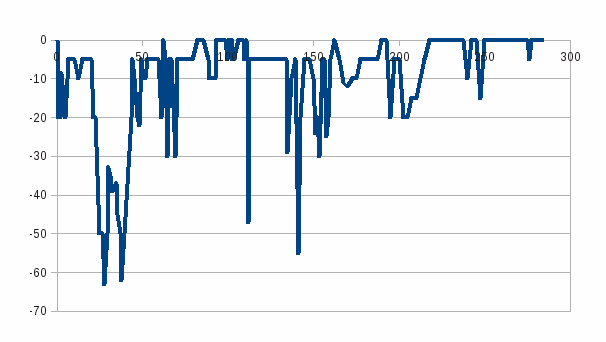

| föregående |
detaljer |
nästa |
index |
A09 |
Banan byggs "över havet" och vi studerar sjökortet märker vi att havs djupet varierar mellan noll och cirka 63 meter. En enkel graf visar följande:

Observera att grafen är missvisande eftersom skalan på x-axeln är i kilometer medan skalan på y-axeln är i meter.
Av grafen framkommer att på tre ställen har vi havs djup under 40 meter